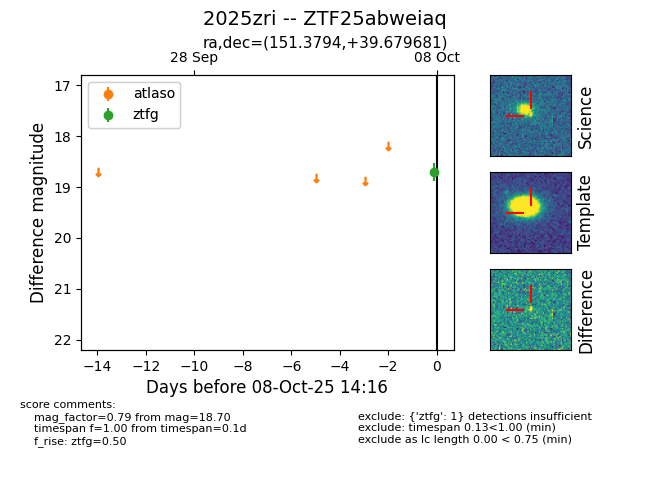

FINK: ZTF25abweiaq
Lasair: ZTF25abweiaq
ALeRCE: ZTF25abweiaq
TNS: 2025zri
YSE: 2025zri
ZTF25abweiaq (ztf,fink)
2025zri (tns,yse)
equatorial (ra, dec) = (151.3794,+39.67968)
galactic (l, b) = (182.0116,+53.54314)

last ztfg=18.70
1 ztfg detections